Publicidad digital
Estrategias y creatividades detectadas en marcas de referencia, con ejemplos.
1. Once Upon a FarmSuscripción y ampliación de gama
 Publicidad digital
Publicidad digitalAcciones detectadas
- Descuento de primera suscripción: 35 % con código FALL35, en formato story y feed.
- Incentivo añadido: pack de prueba de Electrolyte Blends gratis con el primer pedido de suscripción.
- Bundles de edición limitada: pack con otra marca (grüns) con precio tachado y precio de pack.
- Lanzamiento de producto: nuevo sabor Strawberry Kiwi, con mensaje sobre ingredientes que aportan electrolitos de forma natural.
- Gama de «bebé a niño mayor»: anuncio con 30 versiones activas, lo que indica una prueba creativa intensiva.

Lectura para SMILEAT
Referencia para comunicar la oferta de suscripción: código visible, regalo con el primer pedido y bundles con precio de partida y precio de pack. Las notas legales al pie de las piezas (por ejemplo, que el producto no está pensado para rehidratación médica) muestran cómo acompañar un claim de producto con su matización.
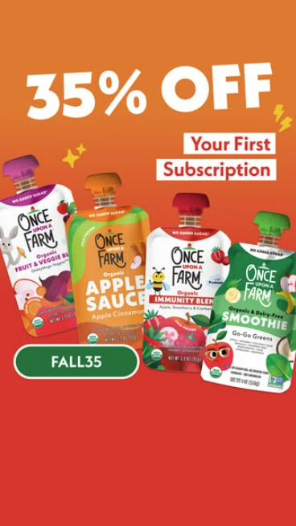
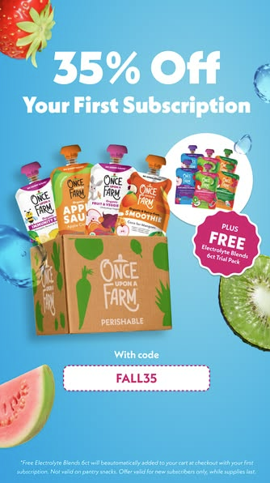
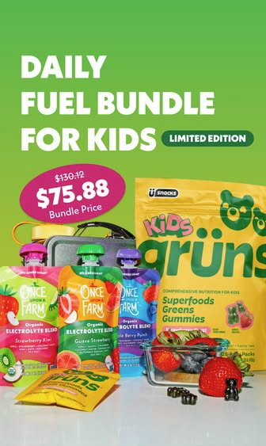
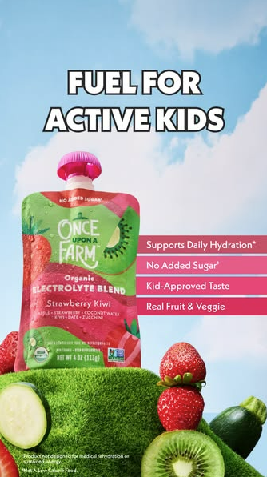
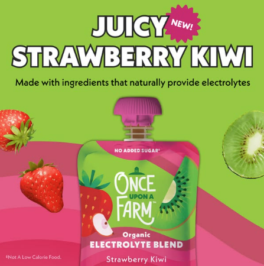
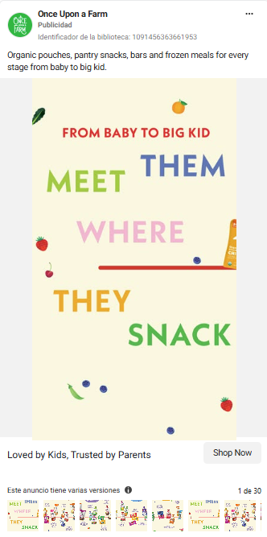
2. Hello BelloSuscripción y beneficios de producto
Publicidad digitalAcciones detectadas
- Caja de suscripción mensual: muestra qué incluye (pañales, toallitas y regalo en la primera caja) con iconos sencillos.
- Beneficios en iconos: protección frente a fugas, absorción, suavidad y ausencia de ciertos componentes, en una franja al pie de la pieza.
- Tono emocional: imagen de familia y mensajes centrados en el momento vital, con el beneficio concreto como apoyo.

Lectura para SMILEAT
Valorar una pieza que explique de un vistazo qué incluye un pedido o una suscripción, y una franja de beneficios en iconos como cierre de anuncios de producto.
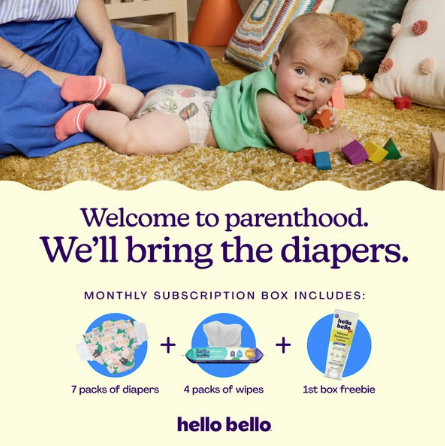
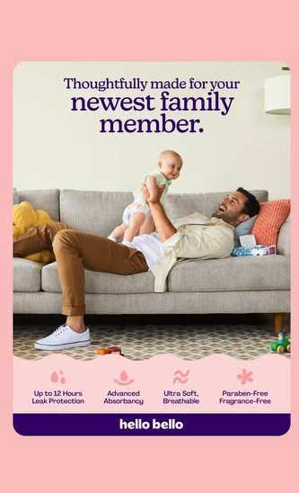
3. SmallsContenido educativo y desmontaje de objeciones
Publicidad digitalAcciones detectadas
- Contenido educativo: comparativas entre alimentos en conserva y productos frescos.
- Desmontaje de objeciones: mensajes que ayudan al consumidor a interpretar etiquetas e ingredientes.
- Formato comparativo: estructura visual sencilla, diseñada para comunicar una idea de un vistazo.

Lectura para SMILEAT
Utilizar creatividades educativas sobre ingredientes, composición, texturas y formatos de alimentación infantil, respaldando siempre las afirmaciones con información verificable.
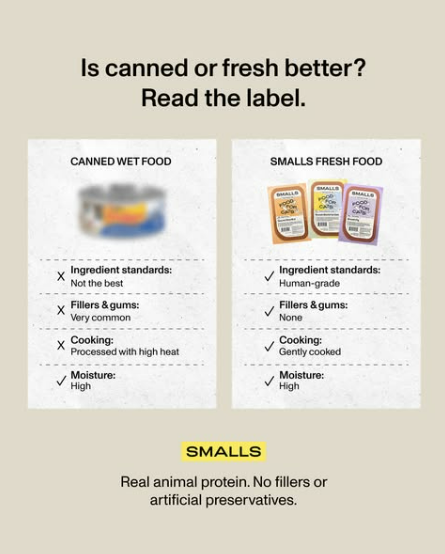
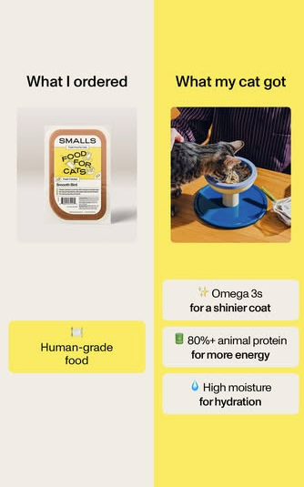
4. DyperDiferenciación de producto
Publicidad digitalAcciones detectadas
- Comparativa frente a competidores: presentación visual de diferencias entre productos.
- Argumentos funcionales: foco en materiales, composición y características del producto.
- Comunicación directa: piezas gráficas que priorizan beneficios concretos frente a mensajes de marca más emocionales.

Lectura para SMILEAT
Valorar comparativas claras de formatos, ingredientes y atributos de producto, evitando afirmaciones comparativas que no estén demostradas.
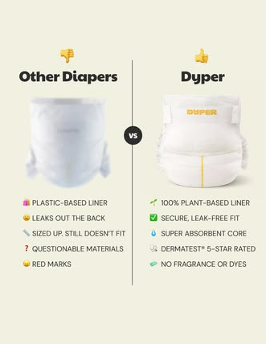
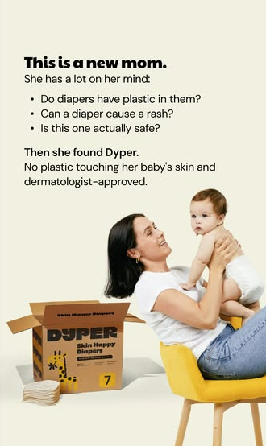
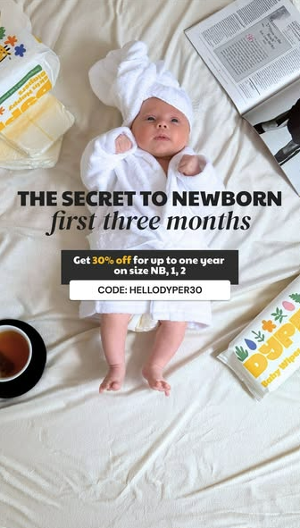
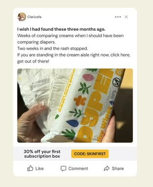
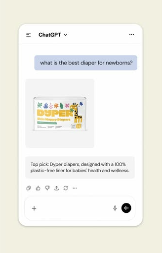
5. WetacaPromoción de producto y variedad
Publicidad digitalAcciones detectadas
- Catálogo visual: presentación de distintos platos para mostrar variedad.
- Promoción temporal: comunicación de ofertas vinculadas a productos concretos.
- Creatividades de producto: fotografía de comida como principal reclamo visual.

Lectura para SMILEAT
Aunque pertenece a otra categoría, puede servir como referencia creativa para mostrar variedad de recetas y momentos de consumo mediante imágenes apetecibles y mensajes breves.
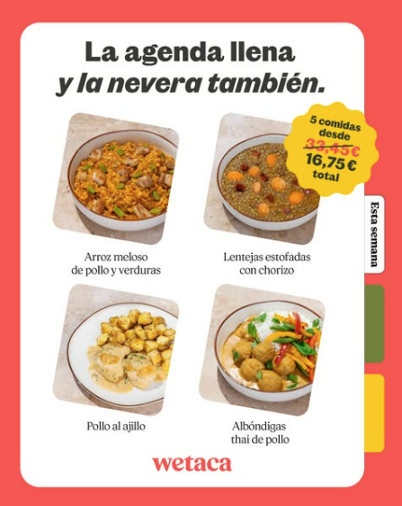
6. Otras creatividades detectadasFuera de la categoría
Publicidad digitalAcciones detectadas
- En el archivo también aparecen anuncios de otras categorías, como bebidas proteicas, comida preparada y videojuegos.
- No los incluiría como competencia directa de alimentación infantil, aunque algunos recursos visuales o promocionales pueden servir como inspiración secundaria.

Lectura para SMILEAT
Inspiración secundaria: cifras grandes de beneficio en una sola pieza, ofertas de reactivación y una estética ilustrada que rompe con la fotografía de producto.
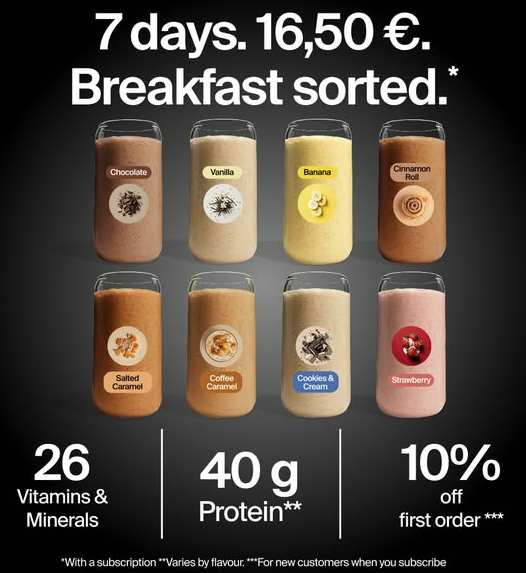
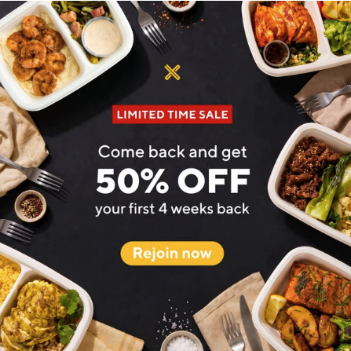
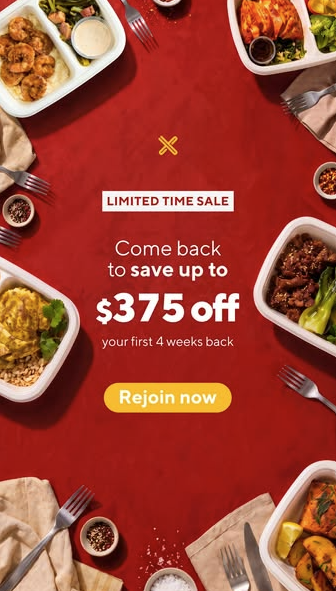
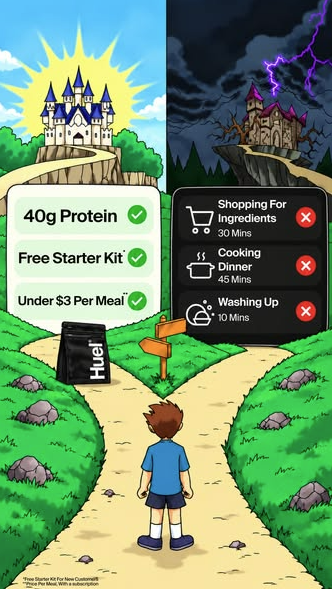
Tendencias transversales observadas
1. Partnership Ads y contenido de creadores
Las marcas utilizan contenido con apariencia más orgánica, testimonios y experiencias personales. Para SMILEAT, conviene identificar colaboraciones con potencial de amplificación pagada y solicitar autorización para promocionarlas como Partnership Ads.
2. Vídeo corto y UGC
El contenido cercano, las demostraciones y las recomendaciones personales son líneas que merece la pena vigilar. Los reels de entrevistas en la calle, las preguntas rápidas y las experiencias reales pueden ayudar a captar atención y generar contenido reutilizable.
3. Promociones para captar nuevos clientes
Los descuentos de primera compra, los códigos y los packs funcionan como incentivos para convertir el interés en prueba de producto.
4. Creatividades educativas
Las comparativas, explicaciones de ingredientes y mensajes sencillos permiten comunicar diferencias de producto sin depender únicamente de la promoción.
5. Diversificación de formatos
Conviven piezas estáticas de producto, comparativas, anuncios promocionales y contenido de creadores. La oportunidad está en probar distintos enfoques creativos y medir cuáles generan mejores resultados en captación y conversión.